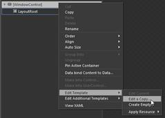
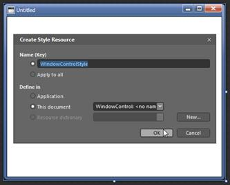
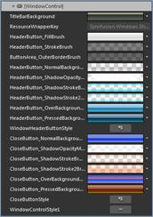
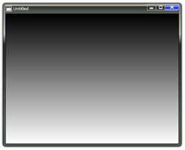

The template of Window Control can be easily editable in Expression Blend, to give a nice look and feel. The following steps should be followed to edit the template in Expression Blend.
1. Open the sample in Expression Blend.
2. Right-click on Window Control and choose Edit Template option as shown below:

Figure 1118: Window Control
3. A window will appear as shown below. Click OK to create a new style for Window Control

Figure 1119: Window
· All the resources will be displayed on the resources pane on the right side of the Design area. These resources can be editable to create a new Style.

Figure 1120: Window Control

Figure 1121: Window Control style edited using Expression Blend.